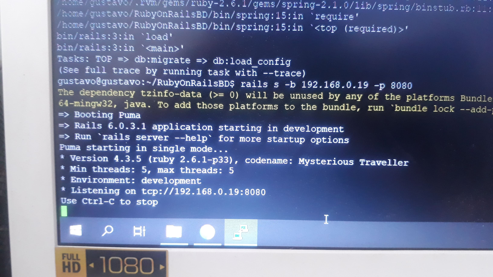

Seminario de Solución de Problemas de Sistemas Operativos de Red
D05
ACTIVIDAD 12

Instalar un sistema en django con bases de datos y uno en rubi on rails con bases de datos y asignar diferentes permisos de acceso a los grupos de usuarios en cada sistema.
Por comodidad, lo primero que vamos a hacer es obtener la versión ejecutable de PUTTY para trabajar de forma remota. Para descargar PUTTY solo tenemos que hacer click aquí Una vez descargada la aplicación, procederemos a instalar openssh-server en nuestro equipo con Ubuntu Server, primero iniciamos como root con "sudo -s", después actualizamos los paquetes con "sudo apt update", instalamos el servicio con el comando "sudo apt install openssh-server" y verificamos que el servicio este correiendo con el comando "sudo systemctl status ssh".
Con el servicio instalado y en correcto funcionamiento, ahora es necesario conocer la dirección IP de la PC que cuenta con Ubuntu Server, para ello usaremos el comando "ip a".
Ahora que conocemos la IP la agregamos en la aplicación de PUTTY, una vez que sea agregada presionamos el boton de "Open".
La primera vez que hagamos esto deberemos añadir la llave o huella SSH del servidor, para eso damos clic sobre "Si".
Posteriormente se abrira una consola donde tendremos que iniciar sesión con los datos de nuestro usuario administrador de Ubuntu Server.
Una vez conectados de forma remota lo primero que debemos hacer es ingresar el siguiente comando "gpg --keyserver hkp://keys.gnupg.net --recv-keys 409B6B1796C275462A1703113804BB82D39DC0E3 \ 7D2BAF1CF37B13E2069D6956105BD0E739499BDB", el cual hará que tengamos curl en nuestro sistema.
Una vez curl se haya instalado, ahora podremos iniciar con el proceso de instalación de Ruby, para ello utilizaremos el siguiente comando "curl -sSL https://get.rvm.io | bash -s stable --ruby", a la mitad del proceso se nos solicitará la contraseña del usuario root, la ingresamos y presionamos Enter.
Ahora tenemos que obtener las referencias a todas las librerías estables para Ruby, esto se logra ingresando este comando "rvm get stable --autolibs=enable"
Posteriormente usamos el comando "rvm install ruby-2.6.1" para instalar Ruby.
Ahora configuramos la versión descargada de Ruby como la versión por defecto con el comando "rvm --default use ruby-2.6.1".
Ahora es necesario instalar NodeJs para ello utilizaremos el comando "curl -sL https://deb.nodesource.com/setup_12.x | sudo -E bash".
A continuación llevaremos a cabo su instalación con el comando "sudo apt-get install -y nodejs".
También necesitamos de C++, esto lo conseguiremos con el comando "sudo apt install gcc g++ make".
Para aplicar los cambios hechos sobre Ruby debemos actualizar Gem, esto es posible al ingresar el siguiente comando "gem update --system".
Con el comando "gem -v" verificamos la versión y la correcta instalación.
Con gem instalado y actualizado procederemos a instalar rails con el comando "gem install rails -v 6.0.1".
Verificamos la versión de rails con el comando "rails -v".
Ahora necesitamos una base de datos, en este caso usaremos postgres con el comando "sudo apt install postgresql postgresql-contrib libpq-dev -y".
Ahora debemos iniciar los servicios de postgresql, esto se logra con los comandos "systemctl start postgresql" y "systemctl enable postgresql".
Iniciamos la aplicación de Postgres con el comando "sudo -u postgres psql" y configuramos sus credenciales de acceso con el comando "\password postgres", también crearemos un objeto que permita hacer la conexión al gestor de bases de datos, para ello utilizaremos el comando "create role rails_dev with createdb login password 'gustavo'".
Posteriormente comenzaremos la instalación de Yarn con el comando "sudo apt install yarn".
Creamos un nuevo proyecto de Ruby con base de datos postgres con el comando "rails new RubyOnRailsBD -d postgresql".
Nos dirigimos a la carpeta donde la aplicación fue generara y utilizando vim modificamos el archivo de la base de datos. Esto se logra con los comandos "cd RubyOnRailsBD" y "vim config/database.yml".
Esto es lo que tenemos que agregar en el archivo:
host: localhost
port: 5432
username: rails_dev
password: gustavo
En el lugar donde se muestra la imagen.
Volvemos a agregar lo siguiente:
host: localhost
port: 5432
username: rails_dev
password: gustavo
En el lugar donde se muestra la imagen.
Para aplicar los cambios realizados sobre la base de datos debemos ingresar el comando "rails db:setup".
También es necesario migrar la base con el comando "rails db:migrate".
Por fin con el comando "rails s -b 192.168.0.19 -p 8080" podremos correr nuestro proyecto.
Podremos ingresar a el colocando la dirección IP así como el puerto en nuestro navegador.
Ahora para el sistema de Django lo primero que tenemos que hacer es instalar Python con el comando "sudo apt-get install python3 python3-pip".
Modificamos la verión por defecto con el comando "sudo update-alternatives --install /usr/bin/python python /usr/bin/python3 1".
Del mismo modo instalamos la versión pip de python con el comando "sudo apt install python3-pip -y".
Tendremos que dar que "s" para que se complete la descarga, posteriormente instalamos Django con el comando "pip3 install Django"
Después de corromper algunos proyectos por cometer errores, creamos un nuevo proyecto con el comando "django-admin startproject proyecto", nos movemos al directorio con el comando "cd proyecto" y modificamos uno de sus archivos con el comando "nano proyecto/settings.py".
Lo único que tenemos que agregar es la dirección IP de nuestra maquina con Ubuntu Server.
Con el comando "python manage.py migrate" se generará una migración de la base de datos utilizando como ruta la dirección IP previamente configurada.
Con el comando "python manage.py createsuperuser" creamos un super usuario y le asignamos credenciales llenando un formulario.
Por último corremos nuestro servicio con el comando "python manage.py runserver 192.168.0.17:8000".
Podremos acceder a el de la misma forma que en Ruby, colocando en el navegador de cualquier dispositivo conectado a la red la dirección IP y el puerto.
También podemos ingresar como admin para modificar la base de datos.
Para asignar permisos primero asignamos un grupo a uno de los proyectos con el comando "sudo chown -R :GrupoMaestro /home/gustavo/proyecto".
Posteriormente le damos permisos de lectura y escritura con el comando "sudo chmod -R g+w /home/gustavo/proyecto".
Por último restringiremos el acceso a todos los usuarios excepto a aquellos que pertenezcan al grupo asignado, esto se hace con el comando "sudo chmod -R o-x /home/gustavo/proyecto"
Repetimos el proceso con el otro proyecto.
Esto ha sido todo. Wall-E se despide.